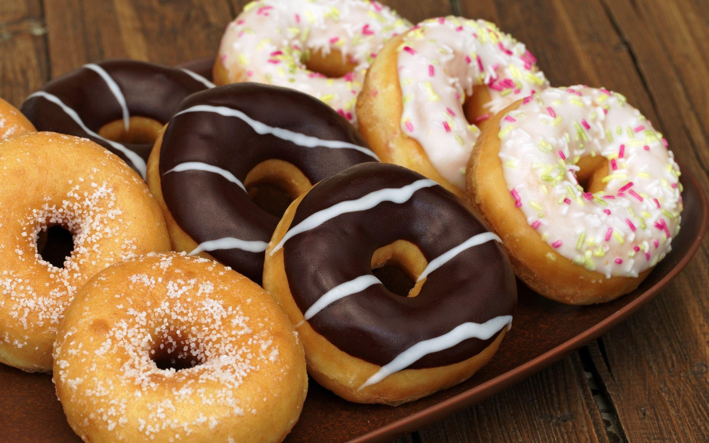

Butter: This classic chocolate chip cookie recipe starts with two sticks of butter creamed with white and brown sugars.
Eggs: Eggs add moisture and act as a binding agent, which means they help hold the dough together.
Vanilla: Vanilla extract enhances the overall flavor of the chocolate chip cookies.
Baking soda: Baking soda acts as a leavener, which means it helps the cookies rise.
Water: A bit of hot water creates steam as it bakes, working with the baking soda to puff the cookies up.
Salt: A pinch of salt enhances the flavors of the other ingredients, but it won't make the cookies taste salty.
Flour: All-purpose flour helps create gluten, which adds structure to the cookie dough.
1/2 Cup evaporated milk
1/2 Cup sesame seeds,
1/4 teaspoon vanilla
PROCEDURE
Beat the butter and sugars, then beat in the eggs and vanilla.
Dissolve the baking soda in hot water and add to the mixture.
Stir in the flour, chocolate chips, and walnuts.
Drop dough onto a prepared baking sheet.
Bake until the edges are golden brown.

MINI DONUT
ENGREDIENTS
3 1/2 cups all-purpose flour
1 tablespoon instant dry yeast
1/2 teaspoon Salt
1/2 teaspoon Salt
Water: A bit of hot water creates steam as it bakes, working with the baking soda to puff the cookies up.
Salt: A pinch of salt enhances the flavors of the other ingredients, but it won't make the cookies taste salty.
Flour: All-purpose flour helps create gluten, which adds structure to the cookie dough.
1/2 Cup evaporated milk
1/2 Cup sesame seeds,
1/4 teaspoon vanilla
PROCEDURE
Prepare the Batter:
In a mixing bowl, whisk together the flour, sugar, baking powder, and salt.
In another bowl, whisk together the milk, egg, and vanilla extract until well combined.
Pour the wet ingredients into the dry ingredients and mix until just combined. Avoid overmixing,
as it can make the donuts tough. Stir in the melted butter until fully incorporated into the batter.
Heat the Oil:
Pour oil into a deep fryer or a heavy-bottomed pot, filling it to about 2 inches deep. Heat the oil to 350°F (175°C).
Use a candy thermometer to monitor the temperature.
Form the Donuts:
While the oil is heating, prepare a piping bag or a Ziploc bag with a corner snipped off.
This will make it easier to pipe the batter into the hot oil.
Once the oil reaches the desired temperature, carefully pipe small circles of batter directly into the oil.
You can also spoon small amounts of batter into the oil.
Fry the Donuts:
Fry the donuts for about 2-3 minutes, flipping them halfway through, until they are golden brown and cooked through.
Use a slotted spoon or a spider strainer to remove the donuts from the oil and transfer them to a plate lined with paper towels to drain off excess oil.
Add Toppings:
While the donuts are still warm, you can coat them in your desired toppings. Roll them in confectioners'
sugar, cinnamon sugar, or dip them in chocolate glaze. You can also add sprinkles for a fun touch.
Serve and Enjoy: Serve the mini donuts warm and enjoy them with your favorite beverage.
They're best enjoyed fresh but can be stored in an airtight container for a day or two.